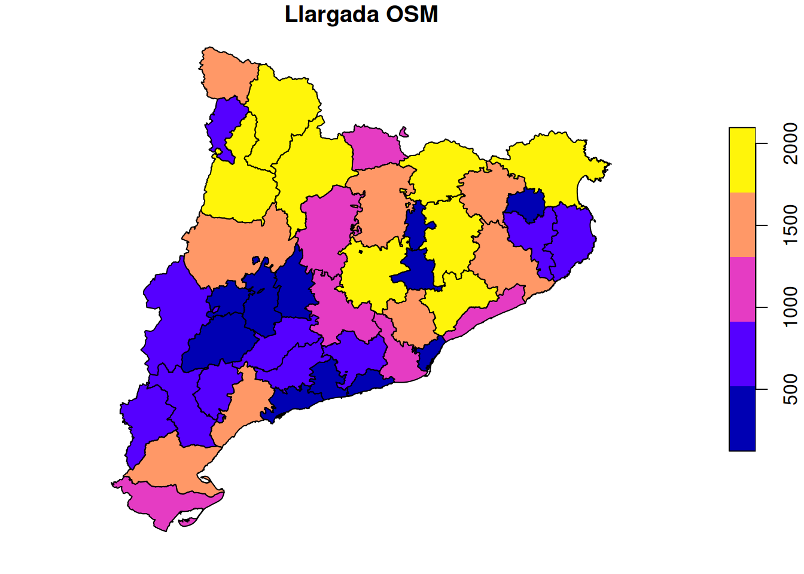
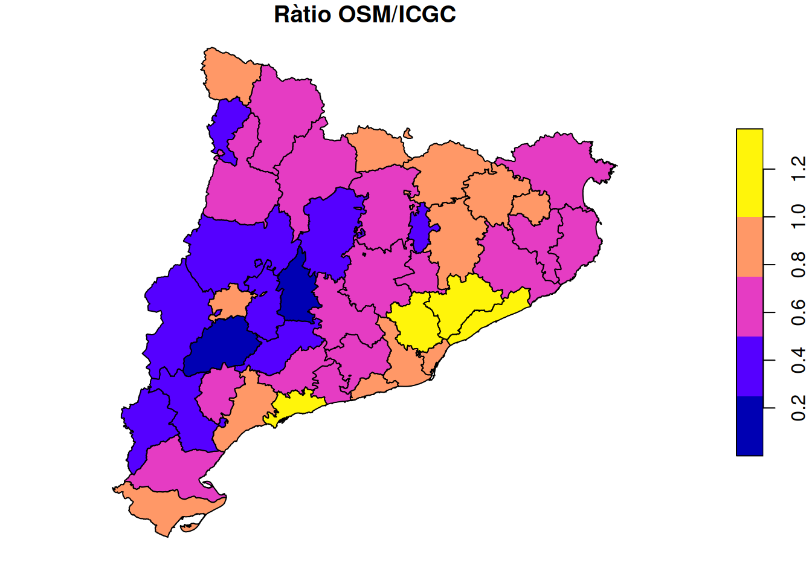

| comarca | length_osm | length_icgc | ratio |
|---|---|---|---|
| Alt Camp | 591,572 | 1.142,06 | 51,80% |
| Alt Empordà | 1.902,569 | 2.640,15 | 72,06% |
| Alt Penedès | 803,924 | 1.369,05 | 58,72% |
| Alt Urgell | 2.048,925 | 3.875,76 | 52,87% |
| Alta Ribagorça | 597,586 | 1.323,30 | 45,16% |
| Anoia | 1.038,740 | 2.075,36 | 50,05% |
| Bages | 1.784,988 | 2.693,75 | 66,26% |
| Baix Camp | 1.616,285 | 1.647,60 | 98,10% |
| Baix Ebre | 1.308,417 | 2.261,28 | 57,86% |
| Baix Empordà | 807,468 | 1.141,72 | 70,72% |
| Baix Llobregat | 982,893 | 1.013,61 | 96,97% |
| Baix Penedès | 377,309 | 690,56 | 54,64% |
| Barcelonès | 232,179 | 273,08 | 85,02% |
| Berguedà | 1.500,625 | 2.877,05 | 52,16% |
| Cerdanya | 939,532 | 1.192,22 | 78,81% |
| Conca de Barberà | 673,981 | 1.437,71 | 46,88% |
| Garraf | 338,625 | 451,17 | 75,06% |
| Garrigues | 235,402 | 1.332,94 | 17,66% |
| Garrotxa | 1.579,028 | 1.899,53 | 83,13% |
| Gironès | 761,689 | 1.150,84 | 66,19% |
| Lluçanès | 216,020 | 571,35 | 37,81% |
| Maresme | 1.254,338 | 916,68 | 136,84% |
| Moianès | 425,351 | 821,29 | 51,79% |
| Montsià | 1.019,640 | 1.110,86 | 91,79% |
| Noguera | 1.308,488 | 3.271,01 | 40,00% |
| Osona | 2.090,769 | 2.228,27 | 93,83% |
| Pallars Jussà | 1.975,911 | 3.477,89 | 56,81% |
| Pallars Sobirà | 2.052,453 | 3.450,59 | 59,48% |
| Pla d'Urgell | 157,788 | 164,75 | 95,77% |
| Pla de l'Estany | 459,232 | 570,34 | 80,52% |
| Priorat | 660,335 | 1.339,08 | 49,31% |
| Ribera d'Ebre | 665,889 | 2.180,47 | 30,54% |
| Ripollès | 1.761,652 | 2.221,60 | 79,30% |
| Segarra | 122,932 | 1.003,11 | 12,25% |
| Segrià | 815,106 | 1.712,23 | 47,60% |
| Selva | 1.670,247 | 2.510,41 | 66,53% |
| Solsonès | 1.139,734 | 2.670,21 | 42,68% |
| Tarragonès | 501,699 | 485,16 | 103,41% |
| Terra Alta | 575,089 | 1.844,55 | 31,18% |
| Urgell | 322,603 | 699,34 | 46,13% |
| Val d'Aran | 1.580,834 | 1.586,99 | 99,61% |
| Vallès Occidental | 1.427,301 | 1.312,19 | 108,77% |
| Vallès Oriental | 1.939,970 | 1.664,54 | 116,55% |
Camins d’Aigua
Seguiment introducció de dades de rieres, rierols i recs a OSM Catalunya
Seguiment per comarques
Longitud cursos d’aigua ICGC: 70.302 km Longitud cursos d’aigua OSM: 44.265 km Percentatge de cursos d’aigua a OSM: 62.96%
Mapes


